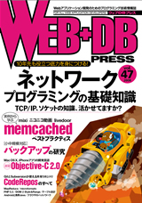
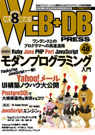
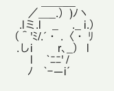
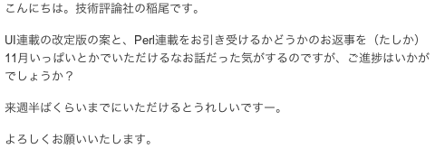
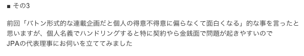
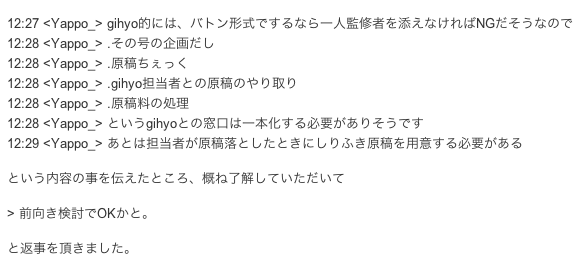

3. に関しては特に言及しませんが、このセッション中に何かを感じとって役立ててもらえたら嬉しいです。
本当は、スライドを作らないで、ざっくばらんに商業誌での Perl 記事について語り合う会にしたかった
昨夜miyagawa さんに「20分トークの資料とか5ページ分くらい作って、話す内容に専念してたほうがいいよ」的なこと言われたので、途中まで作ってるスライド全部捨てて構成変えましたので、そんな感じで
tokuhirom曰く誰解くセッションでございますがおつきあいよろしくねがいします
けど、一応プレゼンテーションの体でやります
本題
Web+DB PRESS の Perl 連載 Perl Hackers Hub をやる上での出来事等を皆様にざっくばらんにお伝えします
YAPC::Asia 2011 運営の JPA 監修です。
質問
この連載の存在しってるかた？
読んだ事あるかた？
おもしろいとおもったかた？
質問おわり。
最初に僕から皆さんへ伝えたい事を最初にいいます
ぶっちゃけ、宣伝するような形にするのも何かちがうのでそうならないようにします。
〜連載前夜〜
最初に、僕と gihyo との馴れ初めから始めると、大体15年くらい前の The Basic (後のざべ、廃刊)で HTML エディタをフル JS で実装した記事をお願いされた事から始まるが、その話は古過ぎて関係無い。あと SD の Plagger 特集でなんか書いたかな。
Web+DB との始まり
100%ネタで「TwitterだけでWeb+DBに記事のせたい」とか馬鹿の事を言ってたら、inaoさんが反応して本当に企画が決まってしまった。
ほんと真面目にやってる皆様に申し訳ないきっかけです＞＜
Perl Hackers Hub の連載につながる事になった過去の記事についてさらっと紹介

Twitter 起源で CodeRepos の記事をやる事になりました

なぜか inao さんに気に入ってもらって、第一特集の企画をやる事に
翌号では第一特集の企画、執筆、人選などをしました
今では cho45 が Web+DB で活躍しておりますが、最初に招聘したのは僕ですね。

cho45 はわしが育てた。。
実はこの特集をやった時から、 Perl Hackers Hub のコンセプトみたいな物があって、「寄稿経験の無い人だけど、面白い事をやってる人」「俺がこいつの原稿を読みたいドリブン」みたいな原則が出来ました。
〜連載のはじまり〜
それは突然に一通のメールから始まった。

と言う感じで、同時に二本の連載を立ち上げる方向制になってしまった。 UI の件は後の Ficia 連載である。
〜準備〜
商業誌の上で個人で複数人のハンドリングをすると色々面倒

そして、連載枠で複数人数の筆者が居ると編集側のコストが増える問題

なので、 JPA に一切合切お願いする事にした。
連載のコンセプトを語る
yappo: 会場を歩き回りながら話して
次のページで分岐
というようなおはなしでございました。
3rdシーズンも続行しそうです
さいごに質問
技術系の原稿書いてみたい方いますか？
いまの技術雑誌に不満があって、こうして欲しいとおもうところがあるかたいますか？
質問おわり
改めて強調しますけど、原稿書いたりするのは特別な事じゃないので、ある程度人に教えたいような事があったらそれらしい人に押し掛けるといいです。
そして「こんな記事が読みたい」と思ったら、強く要望しましょう。もし身近に適任者がいるなら頼み込んで原稿書いてもらって、どこかに売り込みましょう。
Perl Hackers Hub なんかは、ぼくがかんがえたさいきょうのれんさいを皆に頑張って形にしてもらっています。こういう事は本当に誰でも出来る事なので、ちょっと一歩踏み出してみませんか？
手頃な所で、年末の JPerl Advent Calendar とかとか。。。
と言う事で僕発表はおわります